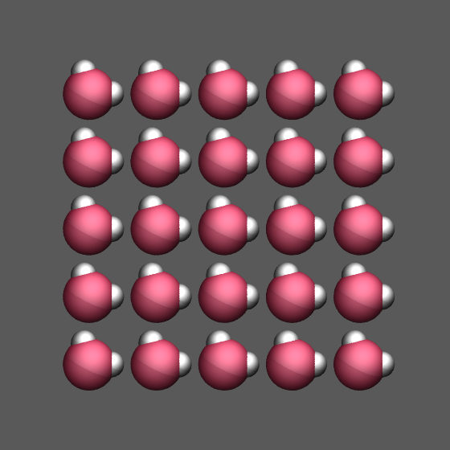
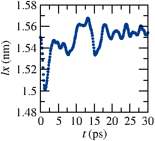
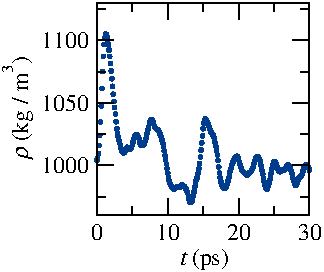
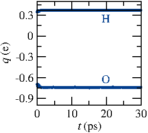

Tutorial: simulating bulk water using reactive force field
This molecular dynamics tutorial describes the LAMMPS input files for simulating bulk water using reactive force field.
Reaxff really is an amazing force field, it is an intermediate between conventional force field and quantum description.
Step 1: npt equilibrium
Let us define the units as real instead of the default lj.
units real
We want to simulate a periodic box.
boundary p p p
Let us use atom style "full", allowing for the use of bonds, angles, dihedrals, impropers and charges. Note that it it not necessary for reaxff to have so many characteristics.
atom_style full
We need to specify the number, type and initial position of the atoms. We create a second file, "data.H2O", containing the information corresponding to one water molecule.
3 atoms
the types of atoms (2) oxygen and hydrogen
2 atom types
The box dimensions will be modified during equilibration steps, but we want it to be reasonable from the start. From the density of bulk water (997 kg/m
3) and using the water molar mass (18 g/mol), we get that the volume occupied by one single molecule of water is approximately 0.03 angstrom
3.
0 3.1 xlo xhi
0 3.1 ylo yhi
0 3.1 zlo zhi
Still within "data.H2O", we specify the masses of both atoms.
Masses
1 15.9994
2 1.00794
Finally we specify the atoms positions, chosen to be reasonable, i.e. the distance O-H is 1 angstrom, and the angle H-O-H is 140°. Note that, since we choose the atom style "full", we need to specify the atom-ID, the molecule-ID, the atom-type, the charge q, and the atoms coordinates x y z, but the specified charge value does not matter with reaxff so we just put 0.
Atoms
1 1 1 0 0.24 0 0
2 1 2 0 1.24 0 0
3 1 2 0 0 0.97 0
The data file "data.H2O" is terminated, note that there is no need to specify values for "bond" or "angle" as we would do when using a classic molecular dynamics force field, such as TIP4P or spce. We call the data file from the main file.
read_data data.H2O

We replicate the system to form a box with 125 molecules, it will make a box of 15 nm x 15 nm x 15 nm, see the image on the right.
replicate 5 5 5
We use reax/c as a pair style
pair_style reax/c NULL
As described on the LAMMPS page: "Style reax/c computes the ReaxFF potential of van Duin, Goddard and co-workers. ReaxFF uses distance-dependent bond-order functions to represent the contributions of chemical bonding to the potential energy." The NULL setting specifies that we use default settings here, not settings specified in another cfile. We fixes the pair coeff, and specify that the first atom type is an oxygen, and the second is an hydrogen. The force field parameter are given in the supplementary material of
Zhang2017.
pair_coeff * * ffield.reax O H
We use the fix qeq/reax for the calculation of the charges. As described on the LAMMPS page: "The QEq method minimizes the electrostatic energy of the system by adjusting the partial charge on individual atoms based on interactions with their neighbors."
fix 1 all qeq/reax 1 0.0 10.0 1.0e-6 reax/c
We choose the following parameter for the construction of neighbor list.
neighbor 1.0 bin
neigh_modify delay 1
We can give an initial velocity to the atoms
velocity all create 300.0 4928459 rot yes dist gaussian
And we start by performing a npt step, imposing the temperature to be 300 K (ambient) and the pressure to be 1 atmosphere. The box dimensions will be adjusted during this step.
fix 2 all npt temp 300.0 300.0 100.0 iso 1.0 1.0 1000.0
We want information to be returned to the terminal every 100 timesteps
thermo 100

And we want to visualize the atom position using a dump, which can be read for example using VMD.
dump 1 all atom 100 dump.npt.lammpstrj

We can follow the box size evolution during the npt step, defining a variable and extracting the value of the variable in a data file called "lx.dat".
variable myLx equal lx
fix 3 all ave/time 100 1 100 v_myLx file lx.npt.dat

Similarly, we can extract the value of the density (expressed in kg/m3). It stabilizes itself at 995 kg/m3 which is reasonable.
group oxy type 1
group hyd type 2
variable nO equal count(oxy)
variable nH equal count(hyd)
variable Na equal 6.022e23
variable vol equal (lx*ly*lz*1e-30)
variable rho equal (${nO}*15.9994+${nH}*1.00794)/${Na}/v_vol/1000
fix 4 all ave/time 100 1 100 v_rho file rho.dat

The charges as calculated by the fix qeq/reax are extracted as well. The charge of the oxygen stabilizes at -0.74e, where e is the charge of the electron, and the charge of the hydrogen stabilizes at 0.37e.
variable qO equal charge(oxy)/v_nO
variable qH equal charge(hyd)/v_nH
fix 5 all ave/time 100 1 100 v_qO v_qH file q.npt.dat
Finally we extract the fluid temperature and pressure. Make sure both values reach the desired values, respectively 300 K and 1 atm.
variable myT equal temp
variable myP equal press
fix 6 all ave/time 10 10 100 v_myT file t.npt.dat
fix 7 all ave/time 10 10 100 v_myP file p.npt.dat
The timestep is chosen to be 0.25 fs following reference
Zhang2017.
timestep 0.25
Finally the simulation runs for 30 ps, before a restart file is created.
run 30000
write_restart restart.npt.equil
Step 2: nvt equilibrium
As a second step, we run the simulation in the nvt ensemble. In this case the volume is imposed, instead of the pressure. First we re-define the basic of the simulation, and we open the restart file "restart.npt.equil".
units real
boundary p p p
atom_style full
read_restart restart.npt.equil
pair_style reax/c NULL checkqeq yes
pair_coeff * * ffield.reax O H
fix 1 all qeq/reax 1 0.0 10.0 1.0e-6 reax/c
neighbor 1.0 bin
neigh_modify delay 1
Following ref
Zhang2017, we use a Berendsen thermostat with a temperature damping constant of 100 fs. This thermostat resales the velocities of the atom every timestep. In addition, we use a fix nve as fix berendsen does not update atom position.
fix 2 all temp/berendsen 300.0 300.0 100.0
fix 3 all nve
We may again generate a dump file and extract a few quantities during this second equilibrium step. There is no need to extract the density as the box dimension is maintained during an nvt step.
thermo 100
dump 1 all atom 100 dump.nvt.lammpstrj
group oxy type 1
group hyd type 2
variable nO equal count(oxy)
variable nH equal count(hyd)
variable qO equal charge(oxy)/v_nO
variable qH equal charge(hyd)/v_nH
fix 4 all ave/time 100 1 100 v_qO v_qH file q.nvt.dat
variable myT equal temp
fix 5 all ave/time 10 10 100 v_myT file t.nvt.dat
timestep 0.25
run 30000
write_restart restart.nvt.equil
Step 3: stationary measurement
Now that the system is at equilibrium, we can make some measurements, such as diffusion coefficient.